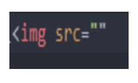
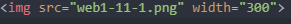

1.WEB1-1
2.WEB1-2
3.WEB1-3
WEB1-1.수업소개
1)이 수업이 시작된 배경을 설명하기 전 서론
WEB1-2.프로젝트의동기
2)(1)의 서론 후, 수업 및 프로젝트의 배경
WEB1-3.기획
3)코딩을 하기 전 필요한 기획 단계 설명
WEB1-4.코딩과 HTML
4)원인-코드,소스,컴퓨터언어->결과-애플리케이션(앱),프로그램,웹페이지(가 모이면),
웹사이트고, 원인인 코드를 통해 결과를 만드는 것이 코딩인데, 그 중에서 HTML로
코딩언어 공부를 첫 시작으로 떼는 이유는 가장 쉽기때문이다
WEB1-5.HTML코딩과 실습환경 준비
5)컴퓨터에는 다양한 운영체제 ex)맥,윈도우,리눅스⋯가 있는데, 그 운영체제마다 에디터(코딩을 하기 위한 프로그램)가 있지만, 운영체제마다 다르기에 영상에서는 ATOM(아톰)이라는 에디터를 공통으로 쓰기로 함
WEB1-6.기본문법 태그
6)<>이것을 태그라 부르고, 앞에 있는 태그를 열리는 태그, 뒤에 있는 태그를 닫히는 태그라 하며, 열리는 태그와 구분 짓기 위해 닫히는 태그 시작에는 /를 붙이고 시작한다, 태그 strong는 스트롱 사이의 글자를 진하게 하고, 언더라인의 앞글자 u태그는 글자에 밑줄을 긋는다
WEB1-7.혁명적인 변화
7)태그 h1~6은 제목 태그로, 1에 가까울수록 글자가 크고 6에 가까울수록 글자가 작으며, 자동 문단 바꾸기가 되고, 기본글자보다 약간 두껍다
WEB1-8.통계에 기반한 학습
8)제곧내(진짜 제곧내라 저게 끝이지만 그러니 이참에 여기다가 실험장 느낌으로 일단 걍 아무거나 써보자 으아으ㅏ으ㅏ으ㅏ으ㅏ으아ㅡ아ㅡ아ㅡㅇ 으갸갸 가나다라12454...가나다라마바사abcdefgㅏㅑㅓㅕㅗㅛㅜㅠㅡㅣ병규,진범쌤,예일쌤,찬형쌤,예슬쌤,진만쌤,혁철쌤)
WEB1-9.줄바꿈: br vs p
9) html new line tag로 검색해보라 하여 검색하니 br이 뜸 그럼 저게 줄바꿈 태그겠지?
그러면 이렇게 해보자
11.28월 점심:잡곡밥,순대국,치즈불닭,배추김치,쥬시쿨,마약옥수수
11.29화 점심:쌀밥,쇠고기미역국,돼지갈비찜,골뱅이무침,깍두기,에그타르트
11.30수 점심:카레라이스,얼큰콩나물국,크루통샐러드,닭다리살잠발라소스구이,깍두기,딸바라떼
12.2금 점심:오므라이스/소스,가쓰오우동장국,함박스테이크,깍두기,무말랭이무침,초코우유
br태그는 시각적으로 줄바꾸는 기능이여서 닫히는 태그 존재X
월 조성희-조성희-이기모-김태욱-양종택-노영윤-김진범
화 신예일 조성희 천세웅 유미란 김지열 오중석 오중석
태그 p는 단락을 나타냄, 여닫히는 태그가 존재
WEB1-10.html이 중요한 이유
10)태그를 아는 이와 모르는 이의 차이를 통해 소스적인 부분에서 태그를 모르는 이는 조금 더 간결할 수 있는 태그를 더 사용하고 아는 이는 간결히 표현이 가능한 간결히 표현하며, 그렇듯 html은 중요한데 hmtl로 구성되는 웹으로 탄탄한 정보를 기반으로 하는 것과 접근성이 용이하고 또한 용이해야 한다는 중요한 점이 있다
WEB1-11.최후의 문법 속성&img
html은 "태그"라는 문법만 존재하는게 아닌거같음 영상으로 보니. "속성"이라는 태그의 심화된 문법이 존재함. 속성은 뭘까 일단 영상을 보겠
태그가 태그만으로는 의미가 부족할 때 속성을 통해 더 많은 의미를 부여하도록 속성의 위치는 원인에서 보듯 상관 없음 소스의 약어로 src 이미지의 약어로 imgWEB1-12.부모자식과 목록
리스트의 약어 li태그. 컨트롤을 누른채로 마우스 커서를 여러곳 누르면 그 여러곳에서 동시에 코딩이 진행됨 리스트와 리스트를 구분 짓고 싶을때 사용하는 ul태그가 있으며 부모태그 ul 자식태그 li의 관계이다 여닫히는 ol 태그 사이의 li태그에 스스로 넘버링하지 않아도 자동 넘버링 시켜 오더드리스트의 약어 ol 언오더드리스트의 약어 ulWEB1 - 13. 문서의구조와 슈퍼스타들
타이틀태그는 책의 책표지같은 것 태그 메타 charset=이걸로 문서를 읽어->이 방식으로 저장되어 있어 태그 바디는 본문을 묶는 역할 본문 설명,바디 설명하는 태그는 헤드 관용적으로 태그 !독타입 html태그는 "이 문서는 hmtl이다"임WEB1 - 14. HTML 태그의 제와
ᆼ 내일인 2022년 11월 29일 화요일 양곡고등학교의 점심은 이겁니다 이렇듯 영어로 배의 돛을 의미하 앵커의 첫글자를 약어로 하는 a태그이며 그것에다가 링크를 부여할때 속성 하이퍼텍스트의 앞글자 h와 참조라는 뜻의 레퍼런스의 글자중 세글자 ref를 합쳐 href로 속성을 하고 링크를 달면 된다 링크를 누르면 자동으로 새탭으로 열어서 이동하게끔 하고 싶으면 타겟="_blank"로 하면 클릭 전 저것이 무엇인지 알려주고 싶다면 타이틀="링크에 대한 설명"하면 됨WEB1 - 15. 웹사이트 완성